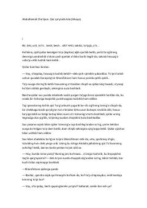

QQYosh qizning taqdiri va o'sha davr jamiyatidagi ijtimoiy ziddiyatlar haqidagi ta'sirli hikoya.
Ushbu hikoyada yosh Sharofatxonning taqdiri va uning otasi Samandar akaning diniy muhit ta'sirida qizini keksa eshonga nikohlab berish qarori tasvirlanadi. Asar o'sha davr jamiyatidagi ijtimoiy ziddiyatlar, qoloqlik va insoniy kechinmalarni o'tkir badiiy tilda yoritib beradi.